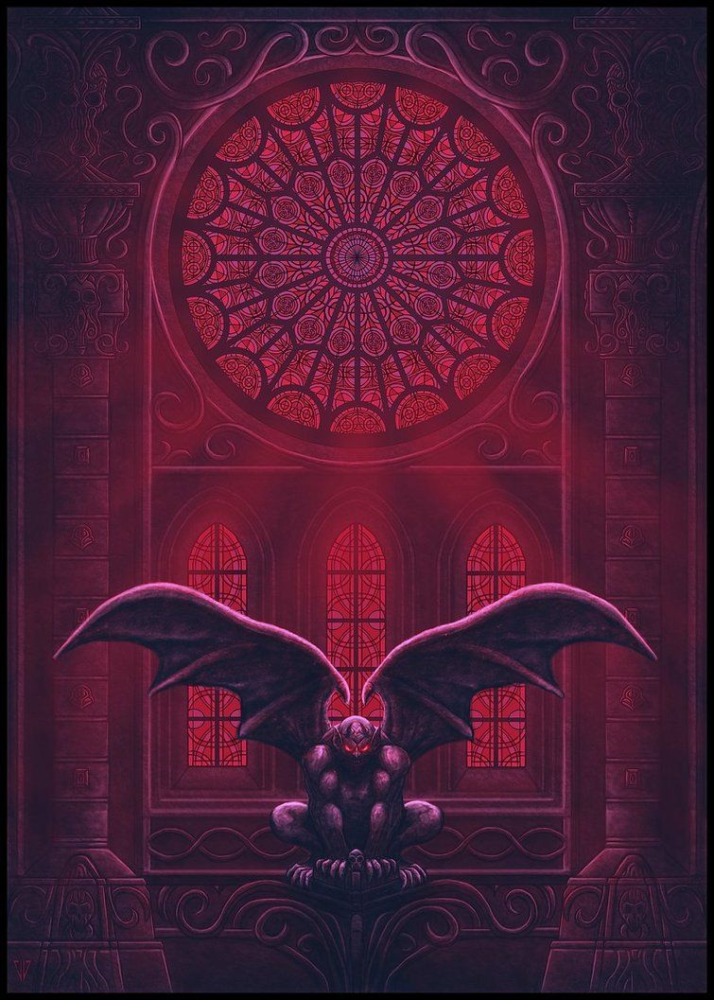

hello there everyone
What does the house of wolves look like?
is it what we think it is?
it looks like a very big house with everything inside is kinda of dirty and has a scaryelement in them
where each individual thing looks kind of similar but has a unique factor whihc you need to look veeerycloselyto see it
clearly. But if you are wondering if there is anything there that looks kind of similar, then I am sorry to break it
that there isn't really any which I know kind of is sad, but it is what it is. The name of the house of wolves in
my language is komestiro ranguiliawhich basically means a thing that looks familiar but you can't recongnize it
which yes that doesn't really have anything to do with a house of wolves, but I liked that phrase, sO yeAh
If you are wondering what that house has to offer/what's inside it then let me tell you.
- 3 Gargoyles in the middle that form a triangle and singing Brick by Brick by Brick in kind of a opera-ish way
- couches if anyone wants to sit, and each one has very sharp microscopic spikes, they are made of Gold so that
when someone sits down, the blood can be easily seen on the couch, as its very comfy
and only 1 can fit per couch, where each couch is placed between the space of the statues, but 5 meters back, so they too form a
TriAngle
- A fountain in the middle of the three gargoyles, its for decoration, and where the bodies goes to after they
bleed out after sitting on the comfy couch. The whole room is silent, so the only sound there will be the water
off the fountain flowing off a certain rythym, to make a kind of kind of sarcastic-stupid rythym, to make the place
feel better, and not a very dark vibey, the dark vibes are already there with the whole decour and stuff.
- 4 small chandeliers, one near the edge on each side, just to give a small lighting to the place, where its a yellow light
just for the vibe and to increase on the scene that is being created, and to go with the gold color of the couches.
The chandeliers are white in color, to give the safe feeling.
- small piecese of glass scattered on the ground and they are black in color, they will reflect and refract light,
so it will give another dizzy feeling, sparky looking, and will add a new dimension to the look, on the ceiling, walls.
-
A door kind of hidden on the side, with a small skull in the middle top, with a bell to ring, so people wearing very
edgy costumes such as short pants, with a black no sleeved leather top kind of jacket, and a dark red jacket above
the black cloth. they are shoeless, they walk on their barefoot. And another one will come in wearing a dark blue
pants, with a light green shirt, just a simple basic clothing, nothing special. When the bill rings, they come in and
remove the body that was in the fountain for 30 mins, after it got to witness the great fountain constantly pouring over
them for a while.
Before deciding to enter the House of Wolves, you must follow the follow 5 steps to the Focking T
- Be sure to take of your shoes, and turn into a sharp object, by your own damn hands
- If the amount of people is odd, then play rock, paper, scissors, and the last one left should be killed
with, using the object that you made from the first step. As the number of people
should be even.
YEAH
- Say your prayers and count your blessing. And everyone should be singing anything in mind, and the others
too as when everyone into a 1 nice tone, it gives the feeling of peace and unity within the people, just to make
thing better before going in. So everyone wouldn't be as stressed as before, you would be in kind of a
state of surrender.
- Be sure to look into the door for 5 straight minutes, then scream as loud as you can, so then it can
decrease your energy of actually reacting to what is coming in the house. Which will be more Enjoyable.
Trust Me.
- Ring the bell and open the door being completly calm
When entering while being barefooted, while the glass on the gorund is in black, so they will walk and bleed on the glass
itself, and while its black, the red from the blood will give a nice addition in colors and look, which then will make it much
nicer in terms of the feeling of the place. And an interesting mix of color to look at. While you can
While the people walk, they will eventually bleed out from the severse loss of blood, which then after a while, they will
be put into the fountain one by one, 30 minutes interval between each one. Which is very interesting.

This is how the Gargoyles look like